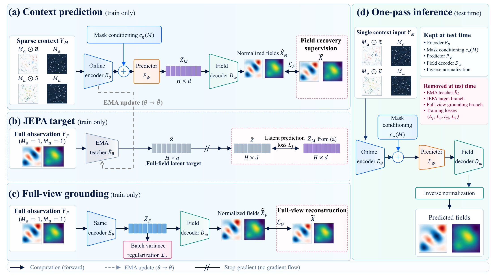
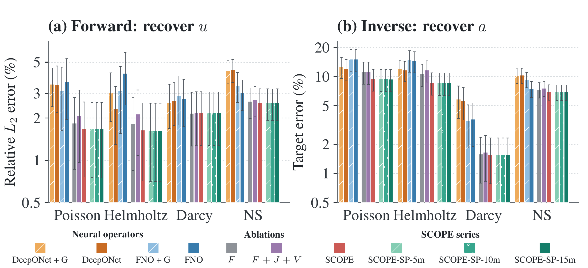

Observe a. Recover u.
Input or coefficient observations condition the dense response.
Scientific machine learning · Public research code
SCOPE: Observation-Conditioned Full-Target Prediction
for Sparse PDE Inference
Learn the representation. Ground it in physical fields.
Adapt the readout. Recover in one pass.
arXiv version in preparation. Final model downloads are being packaged and verified.
01 / The idea
Partial measurements do not uniquely determine every hidden feature. SCOPE predicts complete paired fields from the observed values and their masks, combining full-target latent prediction with physical reconstruction.
A shared decoder learns from both predicted context representations and complete-view encoder representations. At deployment, only the observation-conditioned pathway remains: no teacher, iterative sampling or test-time optimization.

Input or coefficient observations condition the dense response.
Response measurements condition the input or earlier state.
Separate channel masks describe the available measurements.
02 / SCOPE-SP
Decoder-only adaptation fits the representations encountered at deployment. The encoder, mask conditioner and predictor stay frozen; only a newly initialized decoder is trained.
SP is the deployment-path adaptation. It fits detached predictor latents from sparse training contexts, using physical field loss.
DP is a separate diagnostic. It fits complete-view encoder latents and tests readout transfer to the sparse pathway. The two recipes are not interchangeable.
03 / Experimental evidence
The experiments study sparse forward and inverse recovery, grounding within the predictive recipe, and decoder adaptation on frozen representations.
Native-to-SP changes both capacity and optimization. Matched-size DP-to-SP instead compares the latent pathway used for decoder fitting. These comparisons answer different questions.

Unsquared relative L₂ in physical units. Darcy inverse uses pixelwise BER, not continuous relative L₂.
Uniform-500 means 500 / 16,384 = 3.0518%. Cylinder conditioning and zero-target handling are documented separately.
Per-record SD is not training-seed uncertainty. Literature-reported scores are not presented as matched reruns.
04 / Problems & observations
Source → solution
Input → response
Permeability → solution
Earlier → later vorticity
Earlier → later speed
One task, observation family and nominal budget per batch. Actual point locations vary across samples. No-obstacle NS is not an infinite-domain problem. Exact sampling protocol ↗
05 / Reproduce
Explicit commands for installation, backbone training, decoder adaptation and evaluation.
Full installation notes ↗git clone https://github.com/ru1ch3n/SCOPE.git
cd SCOPE
python3 tools/setup.py --pde poissonCreates the environment, downloads the selected public dataset and verifies checksums. No author token needed.
.venv/bin/python -m scope.train --config configs/poisson.json10 complete-view pretraining epochs + 500 main epochs. Add --resume to continue a compatible training run.
.venv/bin/python -m scope.probe --base runs/poisson --size 10m --observation uniform500
.venv/bin/python -m scope.evaluate --run runs/probes/10m-uniform500-full-poisson --protocol uniform3Fit the decoder for 100 epochs on the frozen backbone, then evaluate the resulting SP model. This is a training workflow, not a pretrained-weight download.
Windows: replace .venv/bin/python with .venv\Scripts\python.exe. A BF16-capable 48 GiB GPU is a practical reference class. A CPU smoke-test workflow is available without launching full training.
06 / Research resources
The main model, observation protocols, training and evaluation entrypoints, ablations and decoder probes.
UPSTREAM DATAFunDPS-processed DiffusionPDE data. The installer pins the upstream revision and verifies downloaded files.
RELEASE IN PREPARATIONCompleted backbone, ablation, SP/DP and operator weights are being packaged with metadata and checksums. Historical snapshots and datasets are excluded.
Author and repository metadata are available in CITATION.cff ↗. The arXiv identifier and public paper download will be added when available.
This is a public research-code release, not a claim of conference acceptance. Code, datasets and weights have distinct terms. The anonymous review distribution remains separate.